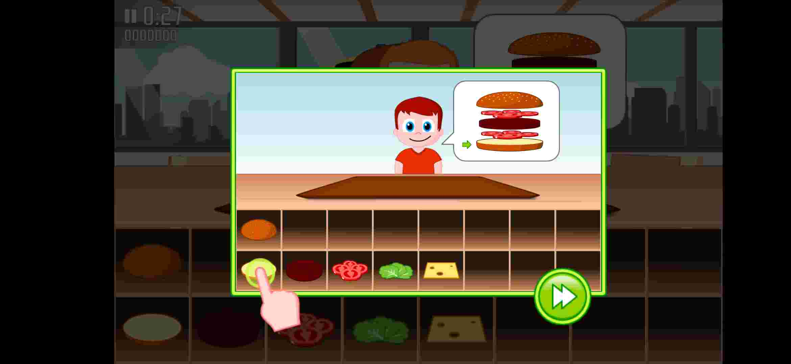
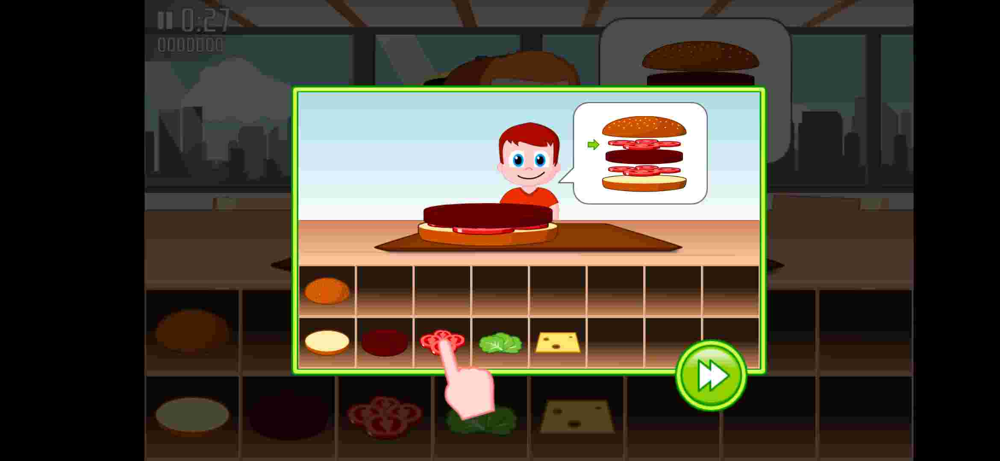

Build gate
measured on: sf · device: emulator-5554 · Android 13 · 1080x2340 · swiftshader (software GL) ·
commit e82dba5 · 2026-11-16 23:02 +07
GATE FAILED (2)
Checks
| result | check | value | limit | against limit | note |
|---|
| PASS | sf_frames | 127.000 | 60.000 |
| refresh 16.67 ms, 20.5 fps |
| FAIL | sf_dropped_pct | 95.238 | 5.000 |
| 120 intervals over 1.5 refresh slots |
| FAIL | sf_p99_interval_ms | 83.847 | 33.400 |
| |
Measured
compositor: 127 frames 20.5 fps p99 83.85ms dropped 120
Thresholds
config.json
Run video
recording.mp4 — frames inside this window are the ones measured above.
Scene checkpoints

scene-01-gameplay
scene-02-gameplay